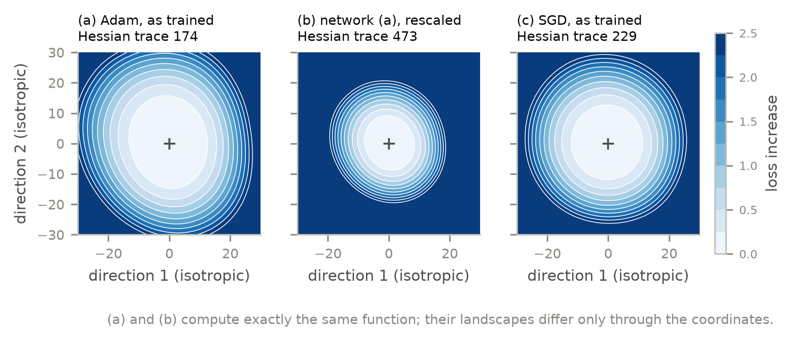
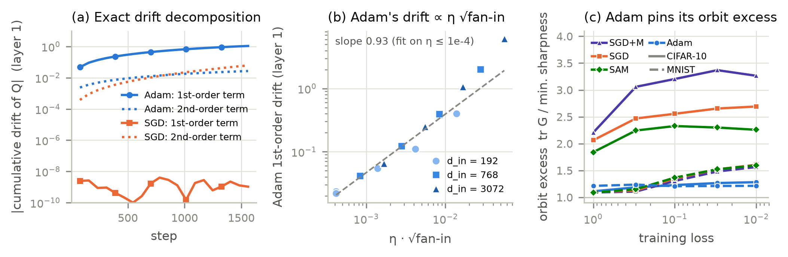
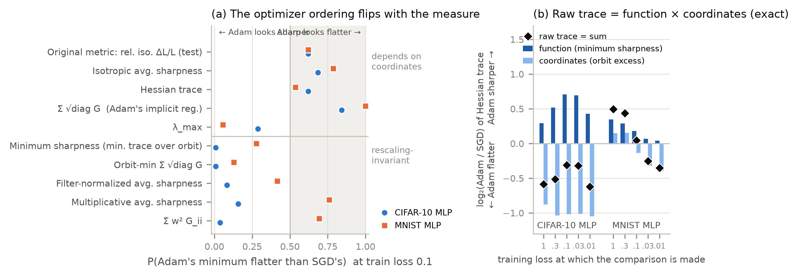
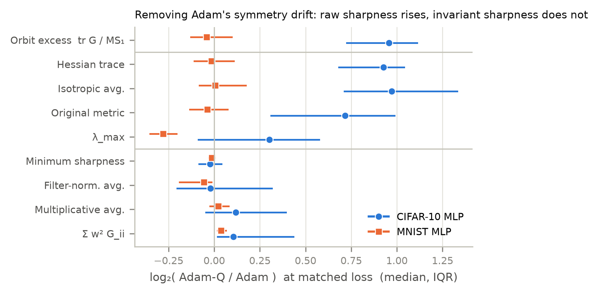
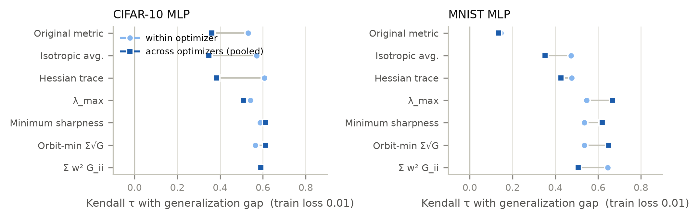
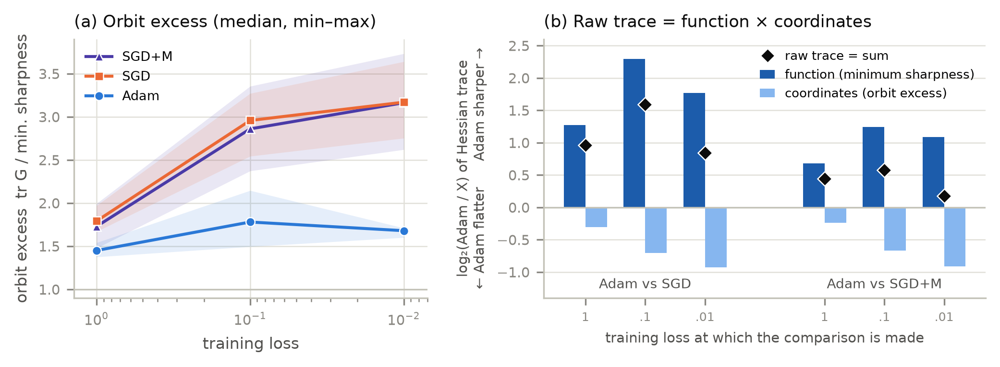

Loss-landscape project · all experiments complete · 2 Oct 2026
Flat in the Wrong Coordinates
Your original study found that Adam's minima are flatter than SGD's. I rebuilt the study from scratch to check that result. It turned out to be an artifact, and the reason behind it is a publishable finding: Adam quietly moves along a symmetry of the network that SGD cannot move along, and that movement makes its minima look flatter than they are.
MLP experiments complete (MNIST, CIFAR-10)Mechanism + causal test completeCNN replication complete (18 runs)Paper draft written (1 placeholder left: code link)
In one paragraph
A ReLU network computes exactly the same function if you multiply one neuron's incoming weights by any positive number c and divide its outgoing weights by c. Sharpness measures such as the Hessian trace and your noise-perturbation metric change under that rescaling, so they mix two things: how sharp the learned function really is, and which of these equivalent weight settings the network happens to sit at. I proved that SGD cannot move between equivalent settings to first order, while Adam can. I also showed that Adam moves to the setting where it looks flattest. On CIFAR-10 that alone makes Adam look about 2× flatter, enough to reverse which optimizer wins. Measures that ignore the rescaling say the opposite of your original result.
The story, in order
four steps
1 · Your result
Adam looked flatter
The original scripts measured ΔL/L under weight noise σ = 0.01. On CIFAR-10, Adam scored 0.0072 against SGD's 0.0553, about 8× "flatter", even though Adam's accuracy was only 33.7% versus 50.0%.
2 · Suspicion
Two confounds
The metric was taken after a fixed 20 epochs, when the two optimizers had reached different training losses. It also uses noise of the same absolute size on every weight, so it depends on how the weights happen to be scaled.
3 · Mechanism
Adam drifts, SGD cannot
For every neuron, SGD conserves ‖w_in‖² − ‖w_out‖² to first order; its first-order drift measured < 3×10⁻⁷. Adam changes it at first order, at a rate ∝ learning rate × √fan-in, and ends up near the flattest-looking equivalent weights.
4 · Verdict
The ranking reverses
Compared at equal training loss, raw measures rate Adam flatter, while measures that ignore the rescaling rate it sharper. Undoing Adam's drift during training roughly doubles its raw sharpness and leaves the invariant measure unchanged.
Key readings
CIFAR-10 MLP unless noted
Networks trained416
On your laptop's CPU, in 7 experiments. The 144 main runs were each measured with 17 sharpness measures at five matched training losses.
Coordinate bias×2.0
The share of the Adam/SGD Hessian-trace ratio that comes from weight scaling alone: −1.02 bits, 95% CI [−1.16, −0.87].
Orbit excess1.2 vs 1.8–3.4
How far the raw trace sits above the flattest equivalent weights, for Adam versus SGD, SGD+momentum and SAM (medians).
P(Adam rated flatter)0.64 → 0.01
At train loss 0.1: raw Hessian trace versus minimum sharpness, the rescaling-invariant version.
Causal test (Adam-Q)×1.91 / ×0.98
Removing Adam's drift multiplies raw trace by 1.91 and invariant sharpness by 0.98, with the same function.
Five ideas you need
glossary
Rescaling symmetry
Multiply a hidden neuron's incoming weights and bias by c > 0 and divide its outgoing weights by c. ReLU makes the output identical. All such rescaled versions form the network's "orbit".
Conserved quantity Q
Q = ‖w_in‖² − ‖w_out‖² per neuron. Gradient descent keeps it fixed (Du et al. 2018), which pins SGD to the scaling it started with.
Minimum sharpness
The smallest Hessian trace over the whole orbit (Ibayashi et al. 2021). It depends only on the function, never on the scaling, and is computed exactly from the curvature diagonal.
Orbit excess
Raw trace ÷ minimum sharpness (≥ 1). The exact identity raw trace = minimum sharpness × orbit excess splits any comparison into a function part and a coordinates part.
Loss-matched comparison
Measure every run when its training loss first drops below 1, 0.3, 0.1, 0.03 and 0.01, then compare optimizers at the same loss. Fixed-epoch comparisons, as in the original study, mix up "how far it trained" with "which optimizer".
Same function, different landscape
Figure 1 of the paper

Loss contours along the same two random directions. (a) and (b) compute exactly the same function.
This is the whole problem in one picture, drawn the way your original contour plots were drawn.
In its own weights, Adam's network (a) looks flatter than SGD's (c): trace 174 vs 229.
Rescale the neurons of (a) without changing a single output and you get (b): trace 473, sharper than SGD.
So a contour plot or noise test of this kind cannot tell you which optimizer found a flatter function unless it accounts for the scaling.
Why Adam ends up in flattering coordinates
66 + 24 runs, exact bookkeeping every step

(a) per-step drift split into exact first- and second-order terms; (b) scaling law; (c) orbit excess over training.
Proof. Each step changes Q by an exact first-order term plus a second-order term. For SGD the first-order term is identically zero (Euler's identity for homogeneous functions); measured, it is below 3×10⁻⁷. For Adam it is 0.02–6.2, 23–800× its own second-order term.
Scaling law. Adam's drift grows as η0.91 · (√fan-in)0.94 at small learning rates, matching the sign-descent prediction η√fan-in.
Not just Adam. RMSprop and plain signSGD do the same thing: orbit excess 1.10–1.28 versus 1.68–2.41 for SGD and SGD+momentum.
Where it ends. CIFAR-10 networks start at excess 3.66. Adam moves to about 1.2 and stays there; SGD stays far above.
One thing I got wrong firstI expected the drift to come from the second-order "step size × fan-in" term. The measurements showed the first-order term dominates, so the paper uses the measured mechanism.
The ranking depends on the measure
144 runs · 4 optimizers · 3 seeds · matched loss

(a) Probability Adam is rated flatter than SGD, per measure. (b) The exact function × coordinates split of the Hessian-trace ratio.
CIFAR-10: your metric, isotropic noise and the Hessian trace say Adam is flatter (P ≈ 0.62–0.75). Minimum sharpness, filter-normalized and multiplicative noise say it is sharper (P ≈ 0.01–0.31).
Why: the coordinate part is ≈ −1 bit (×2 in Adam's favour) at every loss level, larger than the function part (+0.4 to +0.7 bits, Adam sharper).
MNIST is subtler: the coordinate part changes sign during training, so the raw ranking flips mid-training. The function part never favours Adam.
Sanity check: SAM, which is built to find flat minima, comes out clearly flatter than Adam only under invariant measures.
What the paper claimsThe claim is not "Adam is always sharper." It is that raw flatness comparisons between Adam and SGD contain a scaling bias as big as the effect being measured, and the paper shows where that bias comes from.
P(Adam rated flatter than SGD), CIFAR-10 MLP, 95% bootstrap CI
Measure
Type
loss 0.3
loss 0.1
loss 0.01
Your original metric (ΔL/L, test)
raw
0.66
0.62 [0.40, 0.81]
0.67
Hessian trace (Gauss–Newton)
raw
0.75
0.64 [0.44, 0.83]
0.72
λmax (top eigenvalue)
raw
0.37
0.29
0.45
Minimum sharpness
invariant
0.06
0.01 [0.00, 0.06]
0.22
Filter-normalized noise
invariant
0.14
0.08
0.06
Causal test: switch the drift off
Adam-Q · 36 runs

Adam-Q ÷ Adam at matched loss (median, IQR). Blue: CIFAR-10. Orange: MNIST.
Adam-Q is Adam plus one extra step: after every update it rescales each neuron back so that Q equals its starting value. The function is untouched; only the scaling changes.
CIFAR-10: orbit excess 1.18 → 2.35. Raw trace ×1.91, isotropic noise ×1.96, your metric ×1.64. Minimum sharpness ×0.98. Test accuracy unchanged.
MNIST: the scaling barely moves (excess 1.21 → 1.17), so the raw measures barely move either. The size of the effect follows the size of the cause.
Against SGD, Adam-Q is no longer rated flatter (P drops from 0.64–0.75 to 0.21–0.35).
Unexpected resultIn 6 of 18 CIFAR configurations (the noisiest ones), Adam-Q stopped improving at loss ≈ 0.05–0.3 while Adam reached 0.01. The drift may help Adam train, not only distort measurements. The paper reports this as an open question.
Does it matter for predicting generalization?
Kendall τ with the accuracy gap

Correlation within one optimizer (light) versus across optimizers (dark).
Inside one optimizer, raw trace and minimum sharpness predict the generalization gap equally well (τ ≈ 0.55 vs 0.59).
Mix optimizers together and the raw trace drops to 0.38 (CIFAR-10) and 0.47 (MNIST), while minimum sharpness stays at 0.61 and 0.62.
The bias only hurts cross-optimizer comparisons, which is what you would expect from an optimizer-dependent scaling.
Your original metric is the weakest cross-optimizer predictor (τ = 0.36 and 0.14).
Your original study, re-run properly
same protocol · 5 seeds · 20 runs
I reproduced your exact setup (raw 0–1 inputs, full datasets, 20 epochs, batch 64, SGD lr 0.01 vs Adam lr 0.001) with five seeds. Your result replicates, but for a different reason on each dataset.
Mean over 5 seeds
CIFAR-10 SGD
CIFAR-10 Adam
MNIST SGD
MNIST Adam
Your metric ΔL/L
0.034
0.012
0.040
0.014
Training loss when measured
1.42
1.29
0.136
0.008
Hessian trace
1004
395
96.2
9.7
= minimum sharpness (function)
353
320
72.0
8.0
× orbit excess (scaling)
2.85
1.23
1.34
1.21
Filter-normalized noise (×10⁴)
78
207
41
17
CIFAR-10: a scaling artifact
The 2.5× trace gap is almost all scaling (excess 2.85 vs 1.23). The function-level sharpness is nearly equal, and invariant noise tests rate Adam 2.5× sharper.
MNIST: a loss-level artifact
After 20 epochs Adam's training loss is 17× lower than SGD's, and cross-entropy curvature shrinks with the loss. Comparing at equal loss removes this.
Convolutional network check
done · 18 runs

(a) Orbit excess over training. (b) The function × coordinates split of the Adam / SGD and Adam / SGD+M trace ratios.
A small CNN (2 conv layers + 2 dense, CIFAR-10), with neurons replaced by whole channels and the rescaling carried through max-pooling and flatten.
Same mechanism: Adam's channel imbalance is about 2× SGD's in every layer, and its orbit excess stays at 1.45–1.78 while SGD and SGD+M climb to 3.2.
Same bias, growing over training: the coordinate part favours Adam by −0.31 → −0.93 bits against SGD; all confidence intervals exclude zero.
Different outcome: on this network Adam is much sharper at the function level (+0.7 to +2.3 bits), so the bias hides the gap instead of reversing it.
Against SGD+M the hiding is almost complete. The raw trace says "no clear difference" (P = 0.25–0.50), while every invariant measure says Adam is about 2× sharper (P = 0.00).
The three settings togetherThe same bias reverses the ranking (CIFAR-10 MLP), flips it during training (MNIST), or masks a real difference (CNN), depending on how large the true difference is.
The three Adam runs at the lower learning rate stopped at the 150-epoch cap at loss 0.018–0.034, so the loss-0.01 comparison uses the other three Adam runs.
Experiment log
everything that ran
Experiment
Runs
What it tests
Status
pilot_cifar
12
First look with your original preprocessing; found the edge-of-stability effect (λmax ≈ 2/lr)
done
calib_cifar10, calib_mnist
96
Which learning rates train stably at each batch size
done
main_cifar10_mlp, main_mnist_mlp
144
Main audit: SGD, SGD+M, SAM, Adam × 2 lrs × 3 batch sizes × 3 seeds, 17 measures at 5 matched losses
done
drift
90
Exact per-step drift bookkeeping; scaling law; RMSprop and signSGD
done
interv_cifar10, interv_mnist
36
Adam-Q causal intervention
done
orig_replication
20
Your exact original protocol with 5 seeds
done
cnn_cifar10
18
Does it hold for a conv net? (rescaling per channel)
done
What went wrong, and how it was handled
for your own understanding
Problems in the original study
Sharpness was compared after a fixed number of epochs, so the two optimizers were at different training losses (17× apart on MNIST).
ΔL/L divides by the loss, so a poorly trained model looks flat automatically.
Noise of the same absolute size on every weight depends on how the weights are scaled, which is exactly what Adam changes.
One seed and 10 noise draws: no error bars.
Raw 0–1 inputs made Adam at lr 0.001 unstable on CIFAR-10.
The 2-D contour directions were not filter-normalized.
Things I corrected along the way
My first theory of the drift (second-order, fan-in) was wrong; the data showed it is first-order.
The "minimum over rescalings" measure already existed (Ibayashi et al. 2021), so the paper credits it instead of claiming it.
MNIST came out more mixed than CIFAR-10, so the paper's claim was narrowed to what the data supports.
6 of 18 Adam-Q runs stalled; this is reported, not hidden.
Your laptop slept from 05:15 to 10:00 and cut CNN runs short. I deleted those, reran them, and made the sweeps keep the PC awake while they run.
Every number in the paper was re-checked against the raw results, and several overstated ones were corrected.
Where everything is
C:\Projects\Loss Landscape Research
Loss Landscape Research/
├── .venv/ Python environment (PyTorch, CPU)
└── LossLandscapeProject/
├── method*.py, plots/, results/ your original study (untouched)
└── research/
├── paper/main.tex, refs.bib the paper (LaTeX, upload to Overleaf with ../figures)
├── figures/ all paper figures, PDF + PNG
├── README.md how to reproduce every experiment
├── lls/ the library: data, models, training, 17 measures, rescaling maths
├── scripts/ sweeps, analysis, bootstrap CIs, figures, correctness tests
├── results/ one JSON per run: settings, training curve, every measurement
├── data/ MNIST and CIFAR-10 files
├── checkpoints/ saved weights of every main run
└── dashboard/ this page's source
Your next steps
in order
Read the paper draft (research/paper/main.tex) and this page until you can explain every step yourself. Professors will ask about the proof and the Adam-Q test.
Decide authorship: the draft lists only you, with a comment where your supervisor, Dr. E. Sreenivasa Reddy, can be added.
Compile on Overleaf: upload paper/ and figures/ keeping the folder structure (the paper loads figures from ../figures/).
Put the code on GitHub (e.g. under Ashvinj2004) and paste the URL into the paper's "Code and data" line. I did not publish anything for you.
Submit: arXiv (cs.LG; first-time submitters need an endorsement), and consider a workshop on optimization or the science of deep learning.